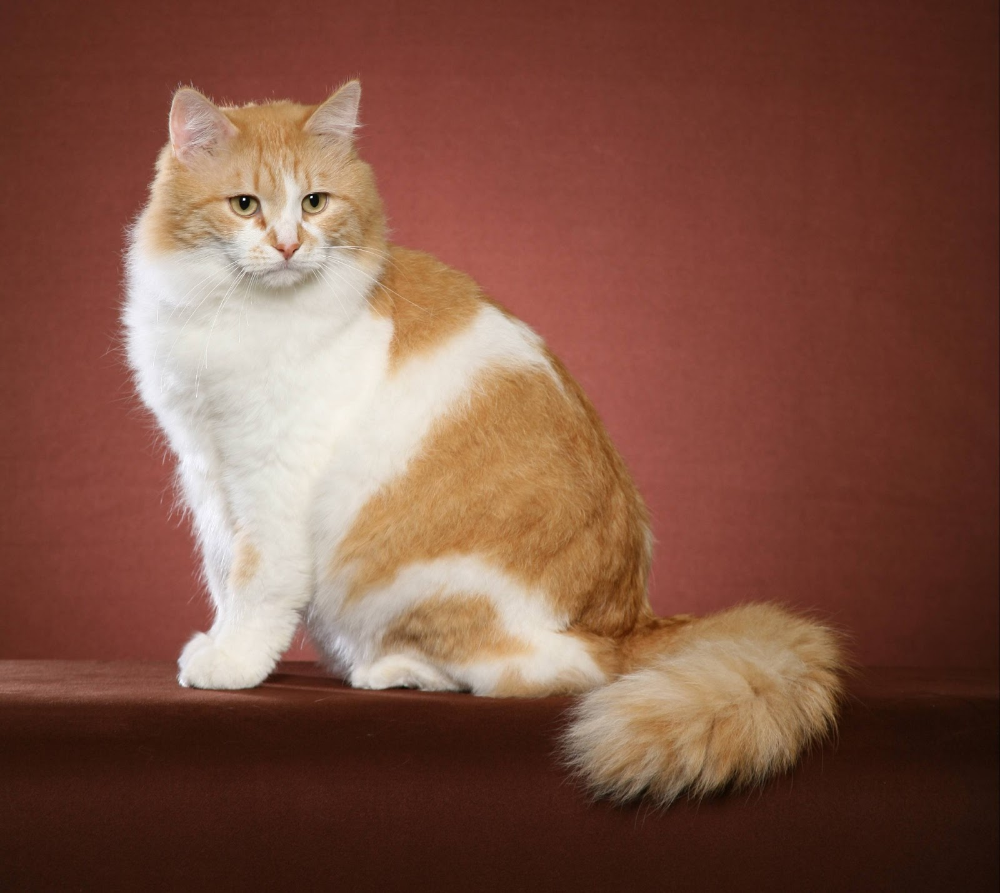

Cats are cool too
Cats I like alot
There are many cool cat breeds out there, such as the following:
- Siberian
- Norwegian Forrest Cat
- Ragdoll
- Bengal Cat
Just to name a few.
The Siberian Forest Cat
Many color varties, great in very cold climates

According to Wikipedia, this cat is a naturally bred. It has a very thick furcoat, which comes with the downside of it's heavy shedding. It comes from Siberia, which is in Russia.
I don't think it had to tell us the last part. But this cat is pretty beautfiul in every color. I never had a problem with pets shedding, but if you do then you may not want to get this exquiste cat
The Ragdoll Cat
An affectionate and clingy cat

These cats tpyially come in a white or white grey-black colors. Very adorable cats who love to spend time with humans. If you ask me, this is the perfect beginner cat for people who are used to dogs.
I really enjoy these cats. Every breed I've seen has accepted my pets. They are without a doubt the most extroverted cats in my eyes. One of them even fell asleep on me, and it was the first time I met it.